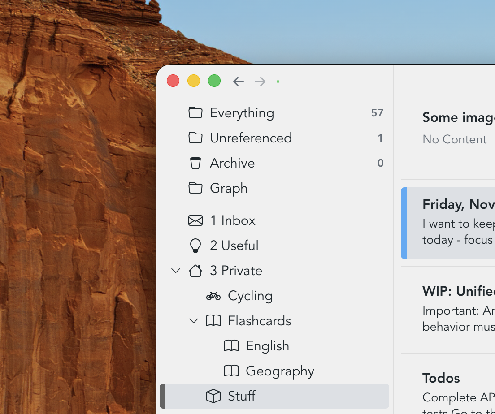
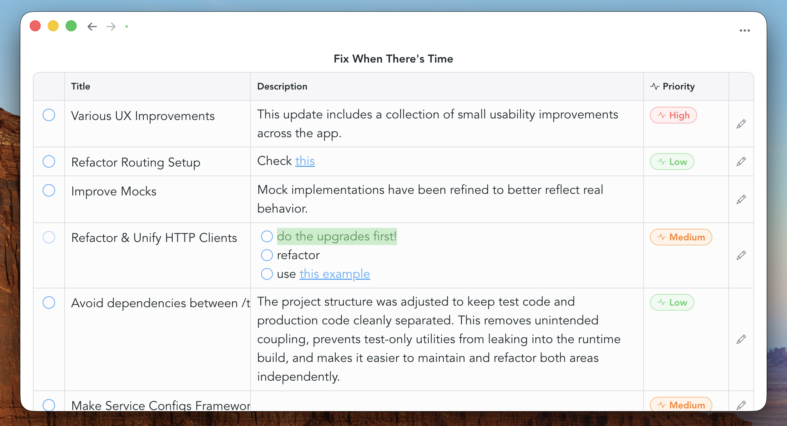
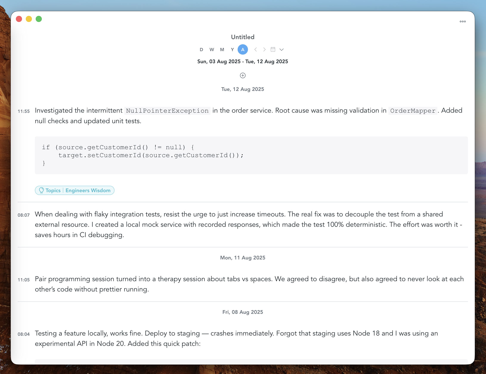
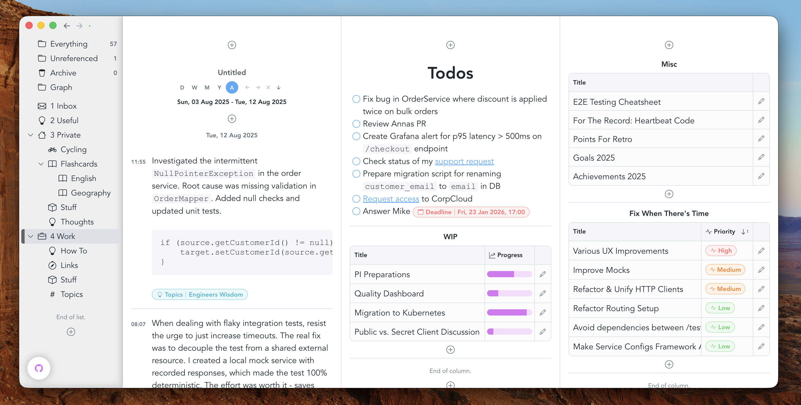
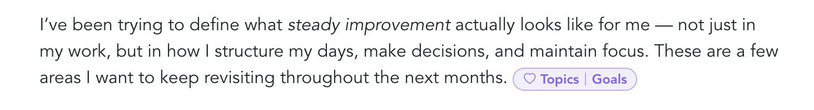

Snippets does not force you into a single organizational model. Instead, it offers multiple approaches that can be used independently or combined.
Folders
Folders provide a hierarchical way of grouping related snippets. While hierarchical organization is sometimes criticized for being too rigid, folders continue to be highly effective for broad, stable structure. They can be nested, and icons can be added to make sections easier to recognize at a glance.

Tables
Tables are typically placed on dashboards, but they can also appear in the navigation view. They simply reference rich text notes and show them as table rows. You can choose what columns to show for each table.

Journals / Logs
Journals reference other rich text notes and display them chronologically based on the note's creation time stamp. This makes them suitable for use cases such as journaling or logging. They provide a time range picker that allows to switch between daily, weekly, monthly and yearly views.

Dashboards
Dashboards offer a more visual way of working. They provide a two-dimensional workspace where multiple elements can exist side by side, making it easy to keep related information together. Rather than relying on hierarchy, dashboards support spatial organization: content is arranged visually, and relationships emerge from layout and proximity. This makes dashboards especially well suited for overviews, projects, and workflows where seeing multiple pieces of information at once is valuable.

Attributes
Attributes can be used in many ways within Snippets, and using them like
#hash-tags is one of them. Once you've created an attribute schema, you'll be
able to get attribute suggestions by typing "/" inside a rich text document:
this will bring up an auto complete from which you can select an attribute.

Snippet references
Snippets can be linked together through references. References allow you to connect related pieces of information without placing them into a fixed hierarchy. This makes it possible to navigate quickly between ideas, follow chains of thought, and build a network-like structure where meaning emerges from connections rather than location.